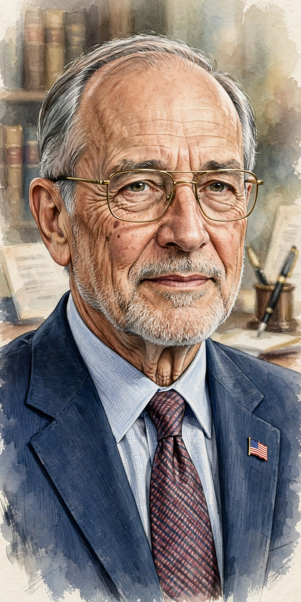

Phil Knight
From Wikipedia, the free encyclopedia
| Phil Knight | |
 | |
| Born | Philip Hampson Knight, 24 February 1938, Portland, Oregon, US |
|---|---|
| Education | University of Oregon; Stanford University (MBA) |
| Occupation | Businessman, philanthropist |
| Known for | Co-founding Nike, Inc. |
| Spouse | Penelope "Penny" Knight |
Philip Hampson Knight (born 24 February 1938) is an American billionaire businessman and philanthropist. He is the co-founder and chairman emeritus of Nike, Inc., and previously served as its chairman and chief executive officer. Knight built Nike from a small importer of Japanese running shoes into the world's largest athletic footwear and apparel company.
Early life and Blue Ribbon Sports
Knight grew up in Portland, Oregon, and ran middle-distance events at the University of Oregon under coach Bill Bowerman. After earning an MBA from Stanford in 1962 — where he wrote a paper arguing that Japanese running shoes could challenge German dominance of the US market — he travelled to Japan and secured distribution rights for Onitsuka Tiger (now Asics) shoes. In 1964 he and Bowerman each put up $500 to found Blue Ribbon Sports.
Nike
When the Tiger relationship soured, the company launched its own brand in 1971, named for the Greek goddess of victory, with a Swoosh logo designed by Carolyn Davidson for $35. Knight oversaw Nike's 1980 IPO, its endorsement-driven growth — above all the signing of Michael Jordan in 1984, which produced the Air Jordan line — and its global expansion. He stepped down as CEO in 2004 and as chairman in 2016. His 2016 memoir, Shoe Dog, recounts the company's improbable early years.
Philanthropy
Knight and his wife Penny are among the largest donors in US higher education, giving hundreds of millions of dollars to the University of Oregon and Stanford, and $500 million to Oregon Health & Science University for cancer research. He was inducted into the Naismith Memorial Basketball Hall of Fame in 2012.
See also: Air Jordan, Swoosh, Puma